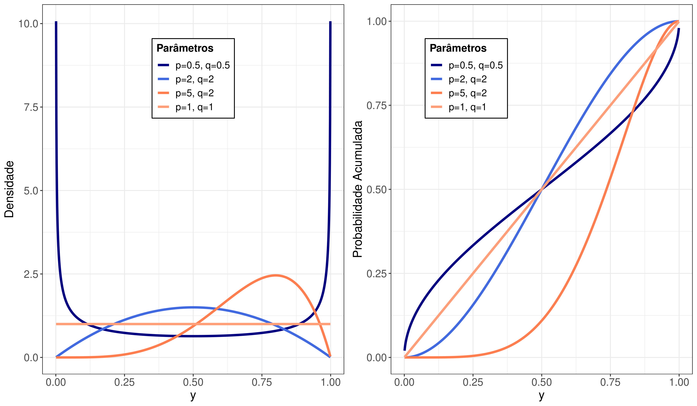
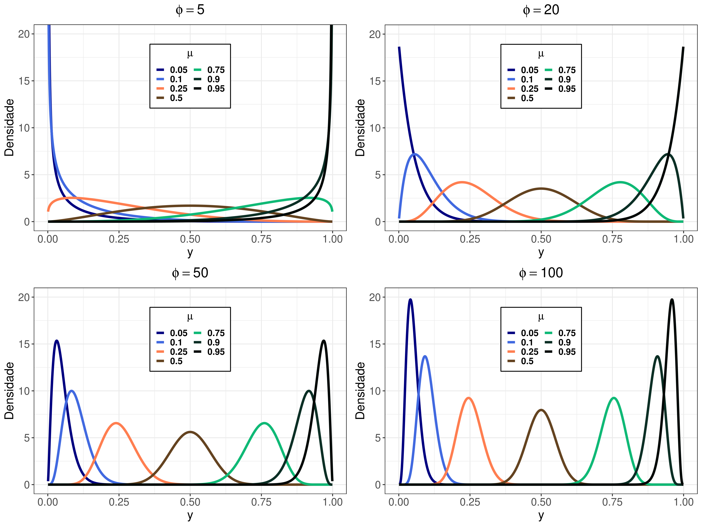

01. Formulação do Modelo Beta
Estudos longitudinais (medidas repetidas) impõem o desafio analítico de lidar com a correlação intrínseca entre observações de um mesmo indivíduo ao longo do tempo. Quando a variável resposta assume valores contínuos e restritos ao intervalo $(0,1)$ — como proporções, taxas e índices —, a regressão linear clássica falha. Para isso, utilizamos a Distribuição Beta.
A fim de conectar as covariáveis diretamente à resposta esperada, a formulação da distribuição foi reparametrizada em termos da média $\mu$ e de um parâmetro de precisão $\phi$ (Ferrari e Cribari-Neto, 2004). A densidade de probabilidade é dada por:
A grande vantagem dessa abordagem é a capacidade de modelar simultaneamente a média e a dispersão (heterocedasticidade) utilizando funções de ligação rigorosas aplicadas a um vetor de covariáveis:


02. Equações de Estimação Generalizadas (EEGs)
Para incorporar a dependência longitudinal intra-sujeito, estendemos a Regressão Beta via Equações de Estimação Generalizadas (EEGs). A grande força das EEGs é não exigir a especificação completa da distribuição conjunta multivariada temporal; é necessário o conhecimento apenas dos dois primeiros momentos da resposta.
Onde $D_i$ é a matriz de derivadas e $V_i$ engloba a estrutura da variância. A correlação ao longo do tempo é parametrizada através da Matriz de Correlação de Trabalho $R(\alpha)$. Neste estudo, investigamos detalhadamente estruturas fundamentais como Autoregressiva de Ordem 1 (AR-1), Simetria Composta (Exchangeable) e Não Estruturada (Unstructured). Para inferências sólidas, o modelo incorpora a robustez do estimador "Sanduíche", blindando os erros padrão do $\beta$ contra especificações errôneas da matriz $R(\alpha)$.
03. Resultados e Diagnósticos
O processo de modelagem é complementado por uma rigorosa análise de diagnóstico, essencial na presença de dados restritos unitários. O trabalho apresenta os desenvolvimentos matemáticos de:
- Diagnóstico Clássico: Extração da Matriz de Projeção e identificação de alavancas usando Resíduos Padronizados e Distância de Cook Generalizada.
- Influência Local: Técnicas para testar a robustez dos estimadores perante perturbações minúsculas (seja na ponderação de sujeitos específicos, nas variáveis respostas ou regressores).
- Critérios de Seleção: Formulação das métricas informacionais $QIC$ e $QIC_s$ (a generalização apropriada do Akaike AIC para métodos regidos por quase-verossimilhança).
Toda essa documentação matemática (com o detalhamento das derivadas, escores e matrizes em formato multivariado) foi digitalizada em tipografia nativa LaTeX, tendo como referência o trabalho original de Venezuela (2008).
Acesse o Trabalho Completo
Tenha acesso ao aprofundamento teórico, matrizes, derivadas e à formatação acadêmica oficial nas versões abaixo.